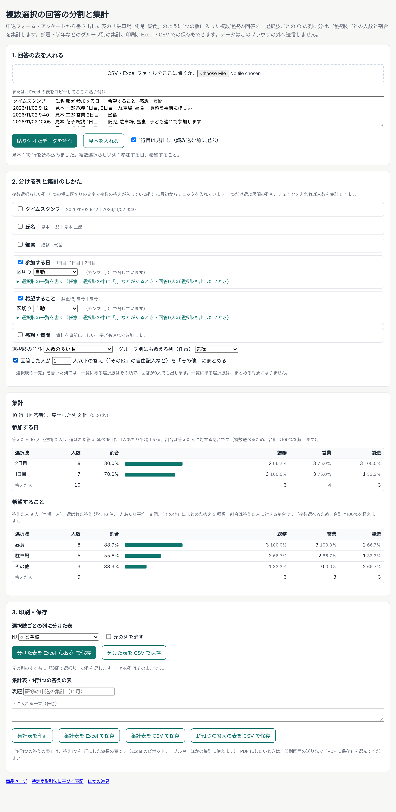

複数選択の回答の分割と集計
申込フォームやアンケートの回答を表に書き出すと、「当てはまるものをすべて選ぶ」設問の答えは、「駐車場, 託児, 昼食」のように1つの欄にまとめて入ります。このままでは、選択肢ごとに何人が選んだかを数えにくく、並べ替えや絞り込みもできません。このツールは、その欄を選択肢ごとの ○ の列に分け、選択肢ごとの人数と割合を集計します。部署・学年・会場などのグループ別の人数も出せます。ソフトのインストールは不要で、いつものブラウザで動きます。
お試し版はすべての機能を使えて、集計・印刷・保存は先頭30行までです。決済が終わると、そのまま製品版の画面に移動します。ブックマークしておけば何度でも使えます。

見本のデータ（架空の研修の申込10件）を集計した例。氏名は説明用のもので、実在の人とは関係ありません。
こんなときに
- 研修・説明会・イベントの申込で「参加する日」「希望すること（駐車場・託児・昼食など）」を複数選べるようにしたら、人数を数えるのが大変だった
- アンケートの「当てはまるものをすべて選んでください」の結果を、選択肢ごとの人数と割合の表にして報告したい
- 「昼食が必要な人」「2日目に来る人」だけに絞り込んだ名簿を作りたい（選択肢ごとの列に分ければ、Excel のフィルターで絞れます）
- 部署・学年・会場ごとに、どの選択肢が何人かを並べた表がほしい
できること
- 選択肢ごとの列に分ける：元の列のすぐ右に「設問：選択肢」の列を足し、選んだ人の行に ○（または 1 と 0）を入れます。ほかの列はそのままです。元の列を消すこともできます
- 人数と割合：選択肢ごとの人数、答えた人に対する割合、答えた人・空欄の人数、1人あたりの平均の個数を出します。同じ人が同じ答えを2回書いていても1回と数えます
- グループ別：部署・学年・会場などの列を選ぶと、グループごとの人数と割合を横に並べた表にします
- 区切りの文字：カンマ（,）・セミコロン（;）・読点（、）・改行・スラッシュ（/）・中黒（・）を列の中身から自動で選びます。選び直すこともできます。全角・半角や空白の違いは同じ答えとして数えます
- 選択肢の一覧：選択肢の中に「,」が入っている（「平日（月, 水）」など）ときや、回答が0人の選択肢も表に出したいときは、選択肢を1行に1つ書けば、その選択肢で正しく分け、書いた順に並べます
- 「その他」にまとめる：「その他」の自由記入のように1人だけの答えが多いときは、○人以下の答えを「その他」にまとめ、中身は別の列に残します
- 保存と印刷：分けた表（Excel ファイル・CSV）、集計表（Excel ファイル・CSV、A4 で印刷）、答え1つを1行にした縦長の表（CSV、ピボットテーブル用）
- CSV（UTF-8・Shift_JIS）と Excel ファイル（.xlsx）を読めます。複数選択らしい列は自動で見つけます。Excel の表をコピーして貼り付けても使えます
できないこと（購入前にご確認ください）
- 自由記述の文章の内容を読み取って分類することはしません（区切りの文字で分けた答えを、そのまま数えます）
- 書き方の違う同じ答え（「駐車場」と「車で行くので駐車場」など）は、別の答えとして数えます。全角・半角と空白の違いだけは同じとみなします
- グラフの画像は作りません（印刷の集計表には横棒が入ります。グラフが必要なら、保存した集計表から Excel で作れます）
- フォームのサービスにつないで回答を取ってくる機能はありません。回答を CSV か Excel ファイルに書き出してから読み込んでください
- スマートフォンでは操作しにくいため、パソコンでお使いください
Excel だけで数えるなら
A 列に回答（「駐車場, 昼食」など、カンマと空白で区切ったもの）、B1 に選択肢の名前（「駐車場」）があるとき、B2 に
=IF(ISNUMBER(SEARCH(", "&B$1&", ", ", "&$A2&", ")),1,0)
と入れて下までコピーすると、その選択肢を選んだ行が 1 になり、=SUM(B2:B1000) が人数になります。C1・D1… にほかの選択肢の名前を入れて、式を右にもコピーすれば、選択肢ごとの列ができます。前後に区切りを付けて探すので、「駐車場の案内」のような別の答えは数えません（=COUNTIF(A:A,"*駐車場*") だと、こうした答えまで数えてしまいます）。
このツールが向いているのは、選択肢が多い・設問が何問もある、自由記入の答えがまざっていて、選択肢の名前を先に全部は書き出せない、部署や学年ごとの表も作りたい、毎回の申込で同じ作業をくり返す、といった式を組むのに手間がかかるときです。
よくある質問
| データはどこかに送られますか？ | 送られません。読み込み・集計・印刷・保存はすべてお使いのブラウザの中で行います。表題など一部の設定だけをブラウザに保存し、表の中身は保存しません。 |
|---|---|
| どのフォームの回答でも使えますか？ | 回答を CSV か Excel ファイルに書き出せるものなら使えます。複数選択の答えがカンマ・セミコロン・読点・改行などで区切られて1つの欄に入っていれば、区切りを自動で見分けます。 |
| 割合の合計が100%を超えるのはなぜですか？ | 1人が複数の選択肢を選べるため、選択肢ごとの割合（その選択肢を選んだ人 ÷ その設問に答えた人）を足すと100%を超えます。 |
| 1つだけ選ぶ設問も数えられますか？ | 数えられます。列にチェックを入れれば、選択肢ごとの人数と割合を出します。 |
| 何行まで使えますか？ | 製品版は行数の制限はありません。2万行の回答で、集計は1秒ほどでした（パソコンの性能によります）。 |
安心してお使いいただくために
- 表はお使いのブラウザの中だけで処理し、サーバーには送信しません
- 動作環境：最新版の Chrome・Safari・Edge・Firefox（パソコン）
- 説明どおりに動かない場合は、ご購入から7日以内にご連絡いただければ返金します
月別×商品のような集計表（クロス表）を作るなら 縦持ち⇔横持ち変換、申込者の名簿の重複を探すなら 名簿の重複チェック、名札を印刷するなら 名札・席札の一括印刷 もあります。